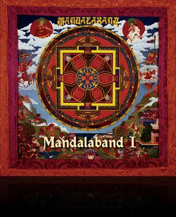

Resurrection
Release: 1 November 2010
2CD digipak
including 6 Bonus Tracks
and 16pp Booklet
The two legendary 1970s albums ‘Mandalaband’ and ‘The Eye of Wendor’ have been completely re-mixed and digitally re-mastered by David Rohl – the mastermind behind Mandalaband and composer-producer-engineer extraordinaire.
Total running times:
CD 1: 57 mins 28 secs
CD 2: 53 mins 19 secs

CD 1: MANDALABAND I
- Om Mani Padme Hum (Ist Movt)8:02
- Om Mani Padme Hum (2nd Movt)4:17
- Om Mani Padme Hum (3rd Movt)3:32
- Om Mani Padme Hum (4th Movt)4:51
- Determination5:48
- Song for a King5:18
- Roof of the World4:28
- Looking In4:38 Bonus Tracks
- Om Mani Padme Hum (Demo)6:54
- Looking In (Audition)4:51
- Roof of the World (Indigo)4:32
MANDALABAND began life in the early 1970s when David Rohl recruited the first band line-up of Dave Durant (lead vocals), Vic Emerson (keyboards), Ashley Mulford (guitars), John Stimpson (bass guitar and backing vocals) and Tony Cresswell (drums). David played keyboards and contributed to the backing vocals – and engineered, produced and composed the music.
With this new mix, David has been able to reinforce the sound of the instruments to give more power and depth to the original recordings. As a result, 35 years on, a veil of sonic mist has been lifted from these unique recordings. The rhythm section, synth orchestration and lead vocals possess a clarity never heard before, making this edition of Mandalaband I an audio treasure. Allow the 20-minute opus that is ‘Om Mani Padme Hum’ to wash over you, with its strident keyboards, soaring guitars, rich tenor vocal and supporting choir. Dave Durant and the London Chorale perform mantras and lyrics from the Tibetan national anthem in this symphonic rock masterpiece which so impressed DJs John Peel and Alan Freeman. We know you will enjoy this new version as much as those pioneer promoters of Prog Rock.
The bonus tracks on Mandalaband I consist of (9) the original demo of Om Mani Padme Hum (1st Movement) recorded at Camel Studios (8-track) in Poynton, Cheshire; (10) a live version of Looking In performed at CBS Studios, in front of Chris Wright (Chairman of Chrysalis); and (11) the Indigo Sound recording of Roof of the World, made after the Wessex Studios album version. All three tracks are sourced from 7.5 ips stereo analogue quarter-inch copy tapes in David’s archive – the original multi-tracks of (9) and (11) having been lost and (10) only ever being recorded directly onto a stereo tape machine. As a result, there has been no opportunity to re-mix them and they remain as they were originally mastered.
CD 2: MANDALABAND II
The Eye of Wendor
- The Eye of Wendor (Overture)4:47
- Florian’s Song3:05
- Ride to the City2:54
- Almar’s Tower1:57
- Like the Wind2:52
- The Tempest1:12
- Dawn of a New Day4:05
- Departure from Carthilias3:07
- Elsethea2:46
- The Witch of Waldow Wood4:36
- Silesandre3:21
- Aenord’s Lament1:52
- Funeral of the King1:28
- Coronation of Damien2:23 Bonus Tracks
- The Eye of Wendor (Indigo)4:32
- The Witch of Waldow Wood (Indigo)4:38
- Silesandre (Indigo)3:24
Over the years The Eye of Wendor has attained cult status amongst Prog Rock fans all over the world. David has completely remixed and remastered the album and now the sheer quality of the production and recording can be appreciated with a new clarity and depth. The complex counter rhythms and melodies which made Wendor such a special album are here revealed as they were originally heard in the studio during those halcyon days in the late 1970s. Based on a Tolkienesque fantasy centred around a magical gemstone, vocalists Eric Stewart (10cc), Maddy Prior (Steeleye Span), Justin Hayward (Moody Blues), Graham Gouldman, Lol Creme & Kevin Godley (10cc) and Paul Young (Sad Café/ Mike and the Mechanics) tell the tale.
Other contributors include: Ritchie Close (Grand Piano, Piano & Fender Rhodes); Woolly Wolstenholme (Mellotrons & Synths, Moog Horns, Cathedral and Hammond Organs); David Rohl (Grand Piano, Pianos & Synths); Phil Chapman (Flutes, Fifes, Alto & Tenor Saxophones); Steve Broomhead (Lead, Spanish, Electric & Acoustic Guitars); John Lees (Lead Guitar, Guitars); Ashley Mulford (Lead Guitar, Guitars); Jimmy McDonnell (Guitar, Rhythm Guitar); Norman Barratt (Voice Box Guitar); Les Holroyd (Bass); Noel Redding (Bass); Pete Glennon (Bass); Graham Gouldman (Bass); Alf Tramontin (Bass); Kim Turner (Drums, Percussion, Synths, Acoustic Guitar); David Hassle (Drums, Percussion); Mel Pritchard (Drums, Rototoms); the Gerald Brown Singers and the Halle Orchestra Strings.
The original Eye of Wendor took two full years to create, beginning in the autumn of 1976 at Strawberry Studios in Stockport, England, where David Rohl had recently been appointed Chief Engineer. With the help of Barclay James Harvest (David was engineering and coproducing them at the time) plus musician friends and colleagues with whom he had worked over the years, the Mandalaband founder carefully created this classic symphonic rock album on a budget of just £8,000. All the singers and musicians contributed their talents for free, working in the studio ‘dead hours’ to keep costs down and so as to afford the luxury of the Hallé Orchestra and Gerald Brown Singers – the final icing on the cake of this ambitious project.
All Eye of Wendor titles have been re-mixed from the original 24-track tapes, with the exception of the Strawberry recordings of (1) The Eye of Wendor (Overture), (10) The Witch of Waldow Wood and (11) Silesandre. These titles were all recorded on a 24-track master tape which has subsequently been lost. The three tracks were therefore digitally re-mastered from the original stereo analogue masters.
The bonus tracks on this CD are 16-track demos of (15) The Eye of Wendor, (16) The Witch of Waldow Wood and (17) Silesandre, recorded at Indigo Sound in 1975.
All original recordings (CD 1: tracks 1-8 and CD 2: tracks 1-11) are issued under licence from EMI Records Ltd.
All bonus tracks (CD 1: tracks 9-11 and CD 2: tracks 12-14) are owned by Legend Records.
Mandalaband I - All music and lyrics published by Go Music/Island Music Ltd. Digital Remaster (P) 2010 Legend Records.
The copyright in the original sound recording is owned by Chrysalis Records Ltd.
Mandalaband II - All music and lyrics published by St Anne's Music Ltd/ EMI Music Publishing Ltd. Digital Remaster (P) 2010 Legend Records. The copyright in the original sound recording is owned by Chrysalis Records Ltd.
Issued under licence from EMI Records Ltd.